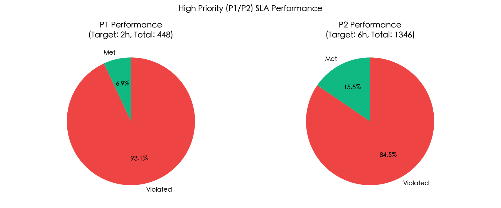
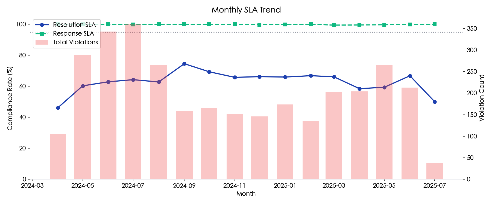
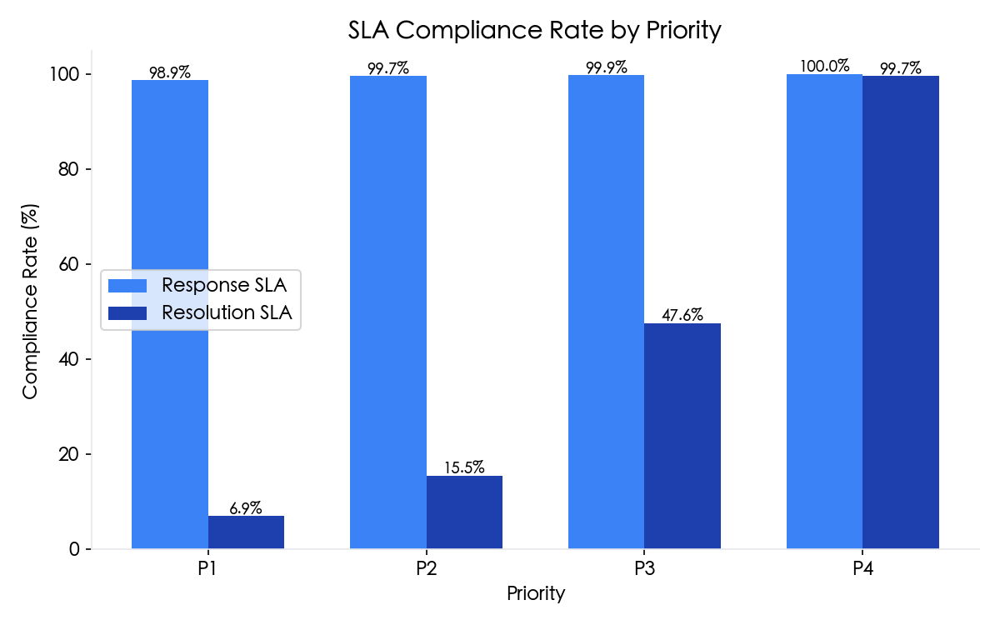
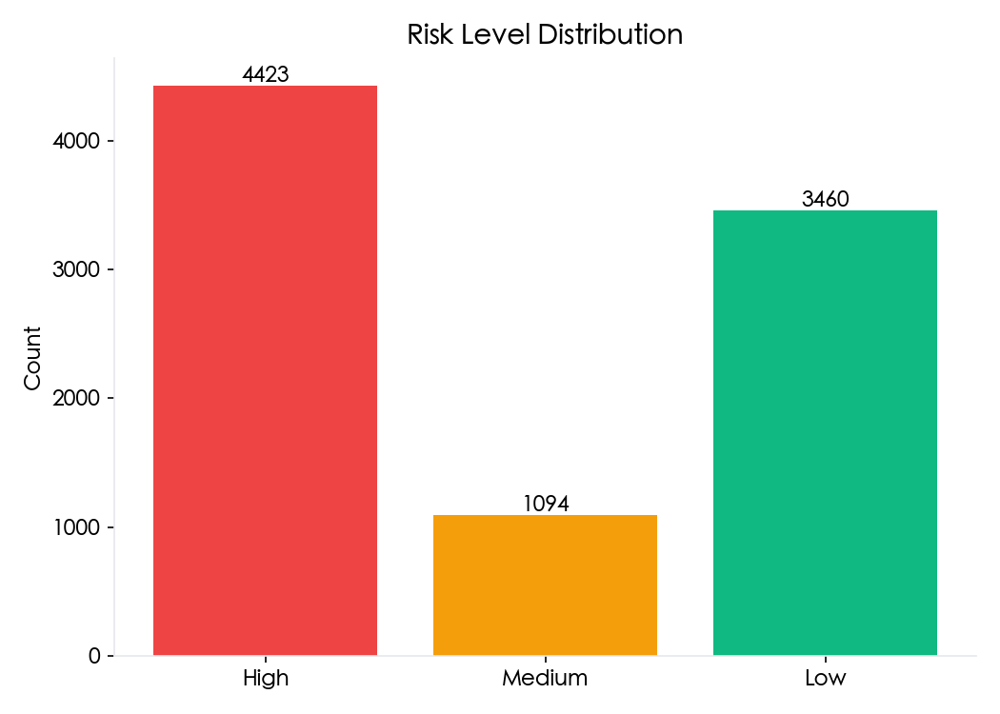
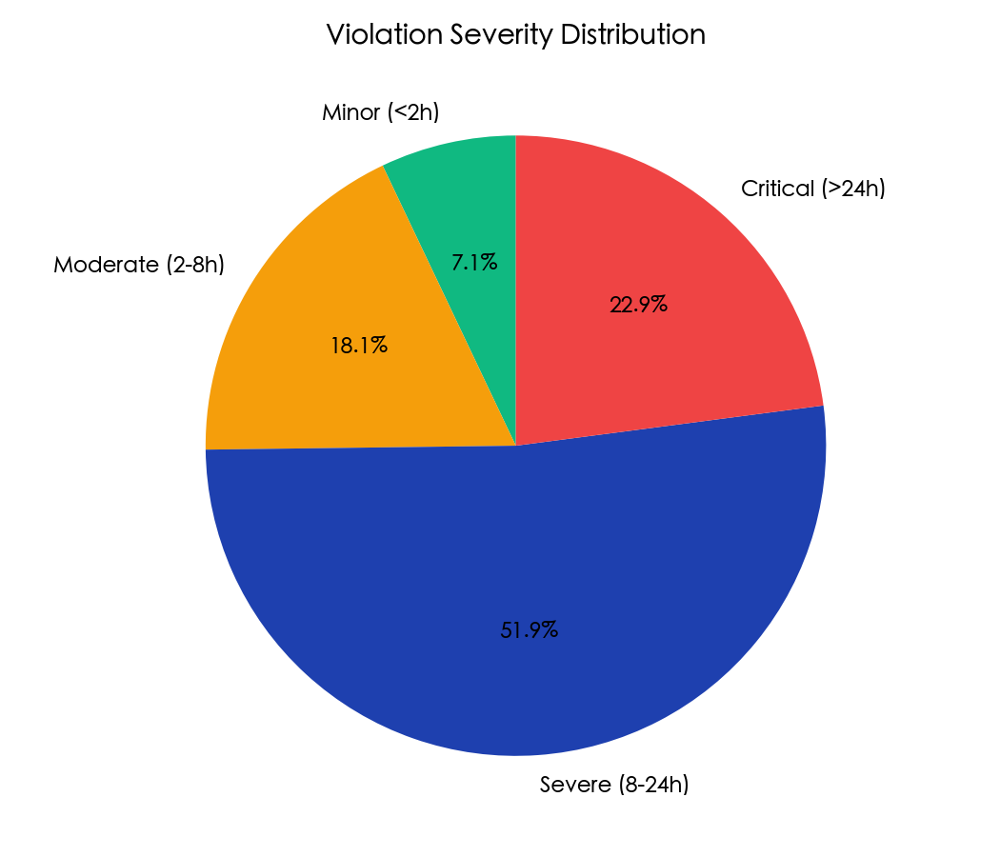
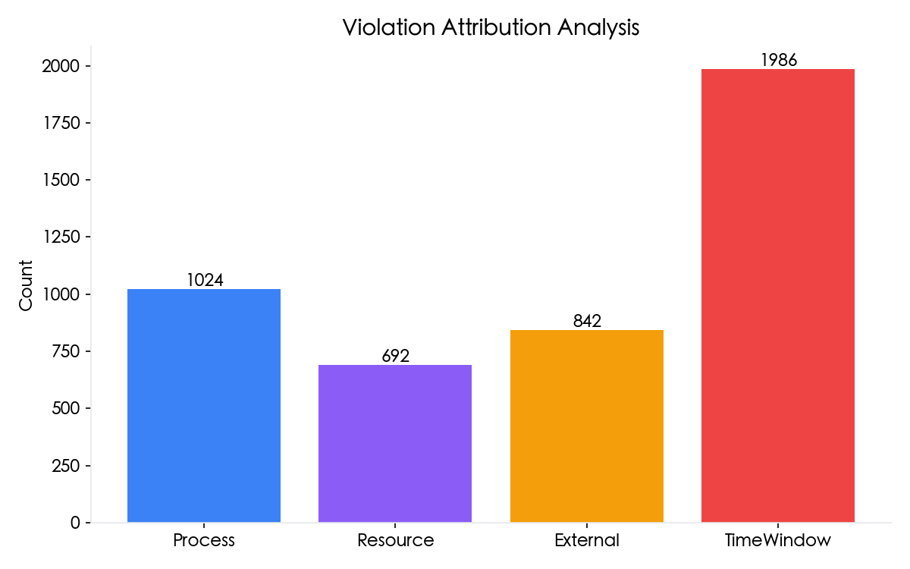
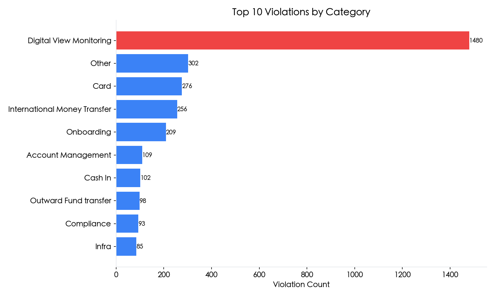

P1 and P2 incidents require immediate attention. SLA targets: P1 Response 15min/Resolution 2h, P2 Response 30min/Resolution 6h.



| Priority | Response Target | Response SLA | Resolution Target | Resolution SLA | Total |
|---|---|---|---|---|---|
| P1 | 15 min | 98.9% | 2 h | 6.9% | 448 |
| P2 | 30 min | 99.7% | 6 h | 15.5% | 1,346 |
| P3 | 45 min | 99.9% | 24 h | 47.6% | 3,141 |
| P4 | 60 min | 100.0% | 48 h | 99.7% | 4,042 |

Tickets approaching or exceeding SLA threshold. "Exceed" shows hours over SLA target.
| Ticket # | Priority | Category | Resolver | Actual | Target | Exceed | Attribution |
|---|---|---|---|---|---|---|---|
| 80000001 | P4 | Digital View Monitoring | Susan Smith | 40.3h | 48h | 0.0h | TimeWindow |
| 80000005 | P3 | Digital View Monitoring | Jessica Smith | 19.9h | 24h | 0.0h | Resource |
| 80000022 | P3 | Digital View Monitoring | Jennifer Smith | 23.3h | 24h | 0.0h | Resource |
| 80000034 | P4 | Digital View Monitoring | Jessica Smith | 44.2h | 48h | 0.0h | TimeWindow |
| 80000049 | P3 | Cardless Cash Out | Sarah Smith | 21.1h | 24h | 0.0h | TimeWindow |
| 80000056 | P3 | Other | Lisa Smith | 22.2h | 24h | 0.0h | Resource |
| 80000060 | P3 | Digital View Monitoring | Karen Smith | 22.1h | 24h | 0.0h | Resource |
| 80000062 | P4 | Onboarding | Daniel Smith | 43.8h | 48h | 0.0h | Process |
| 80000073 | P4 | Bill Payment | Robert Smith | 45.0h | 48h | 0.0h | TimeWindow |
| 80000076 | P3 | Digital View Monitoring | David Smith | 22.6h | 24h | 0.0h | Resource |

| Ticket # | Priority | Category | Resolver | Resolution | Exceed | Attribution |
|---|---|---|---|---|---|---|
| 80007418 | P2 | Infra | Thomas Smith | 9570.2h | +9564.2h | Resource |
| 80002938 | P1 | Customer Complaint | David Smith | 9459.2h | +9457.2h | Resource |
| 80000956 | P4 | Other | Daniel Smith | 9064.2h | +9016.2h | TimeWindow |
| 80005518 | P4 | Compliance | Mary Smith | 8438.3h | +8390.3h | TimeWindow |
| 80006606 | P2 | Cash In | Thomas Smith | 1605.5h | +1599.5h | Resource |
| 80000772 | P3 | International Money Transfer | Linda Smith | 1075.7h | +1051.7h | Resource |
| 80007087 | P3 | Onboarding | Robert Smith | 849.7h | +825.7h | Resource |
| 80008807 | P2 | Compliance | Christopher Smith | 746.8h | +740.8h | Resource |
| 80002599 | P1 | Card | William Smith | 620.9h | +618.9h | Process |
| 80001614 | P3 | Card | Jessica Smith | 621.0h | +597.0h | TimeWindow |
| 80004092 | P4 | Digital View Monitoring | Lisa Smith | 533.0h | +485.0h | Process |
| 80000649 | P3 | Digital View Monitoring | Daniel Smith | 491.5h | +467.5h | TimeWindow |
| 80005948 | P4 | Cash Out | Patricia Smith | 501.4h | +453.4h | Resource |
| 80003571 | P2 | Card | Lisa Smith | 455.1h | +449.1h | Process |
| 80002489 | P4 | Account Management | Daniel Smith | 462.9h | +414.9h | Process |


P1 Resolution SLA is at 6.9% (target: 95%). P2 is at 15.5%.
Majority of violations occur during off-hours (18:00-09:00) and weekends.
Tickets pending on external teams or customers cause significant delays.
Reassignment and escalation delays contribute to SLA breaches.
This category accounts for 1,480 violations (46% of total).
Top resolver has 154 violations. Consider workload balancing.